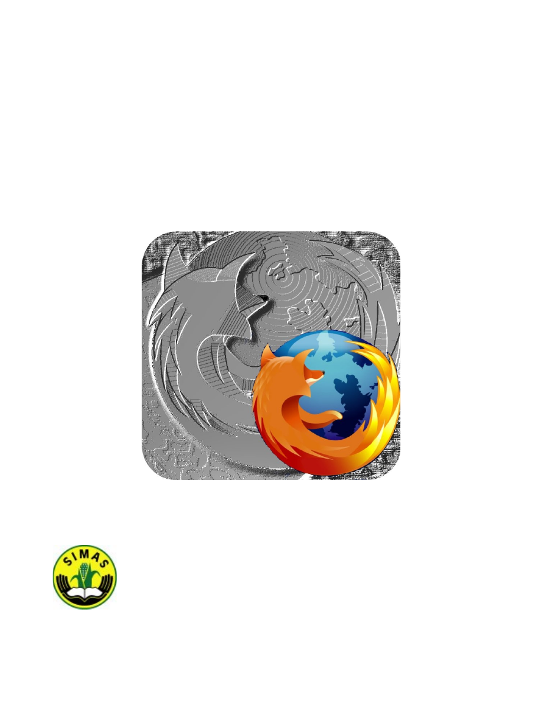
Manual de Firefox
Instalación y uso
Servicio de Información Mesoamericano de Agricultura Sostenible

ÍNDICE
¿Qué es Firefox?
....................................... 3
¿Cómo lo descargo a mi computadora?............................... 4
Instalación
....................................... 5
Comenzar a utilizar Mozilla Firefox ....................................... 8
Elementos para Navegar
....................................... 9
Pestañas de Navegación
....................................... 11
Uso de Marcadores
....................................... 12
Guardar y extraer información
....................................... 15
Historial
....................................... 15
Establecer Preferencias
....................................... 16
Temas y Extenxiones para Mozilla Firefox............................. 18
Unidad de Informática
2
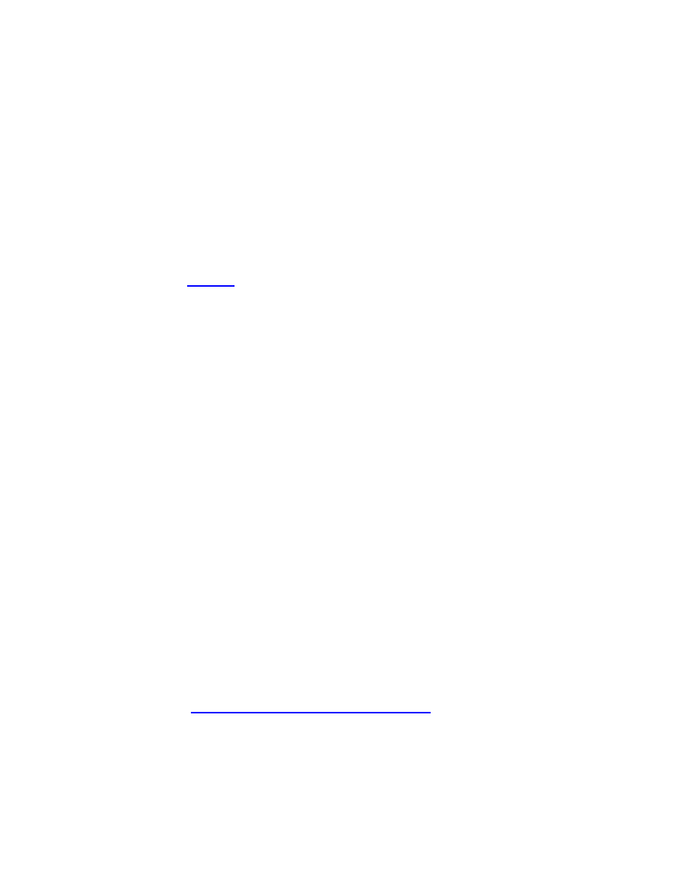
¿Qué es Firefox?
Firefox es una de las aplicaciones gratuitas que se pueden utilizar
para navegar en Internet. Seguramente el lector utilice Internet
Explorer que es el navegador más conocido y utilizado, pero no el
mejor.
Basado en Mozilla, el proyecto Firefox nació, a finales de 2002,
orientado a usuarios no técnicos. Fue pasando por diversos nombres
(Phoenix, Firebird) hasta tomar la denominación actual. Cabe destacar
que se trata de un proyecto ‘Open Source’ (Código Abierto), lo que
supone que cualquier desarrollador puede modificar el código para
mejorarlo. Este pequeño manual le enseñará a instalar y utilizar
Firefox en una computadora con sistema operativo Windows.
¿Por qué debo usar Firefox?
Hay muchas razones para utilizar Firefox como navegador: es más
rápido, más seguro y más fácil de usar (con su navegación por
pestañas, por ejemplo); a la vez que posee bloqueo de ventanas
emergentes (pop-ups), tiene barra de búsqueda integrada y protege
tu privacidad.
Finalmente se actualiza constantemente y es muy fácil de ampliar
con la posibilidad de instalar pequeños programas, o ‘extensiones’,
que añaden nuevas funcionalidades como: recordatorios, guardar
direcciones, sitios o sesiones completas de búsqueda, informe
meteorológico, etc .
¿Dónde encuentro información en español acerca de Firefox?
Toda la información oficial sobre Firefox se puede encontrar en su
página web: http://www.mozilla-europe.org/es/.
Otras web se dedican a difundir noticias y documentación sobre
Firefox, como por ejemplo:
Unidad de Informática
3
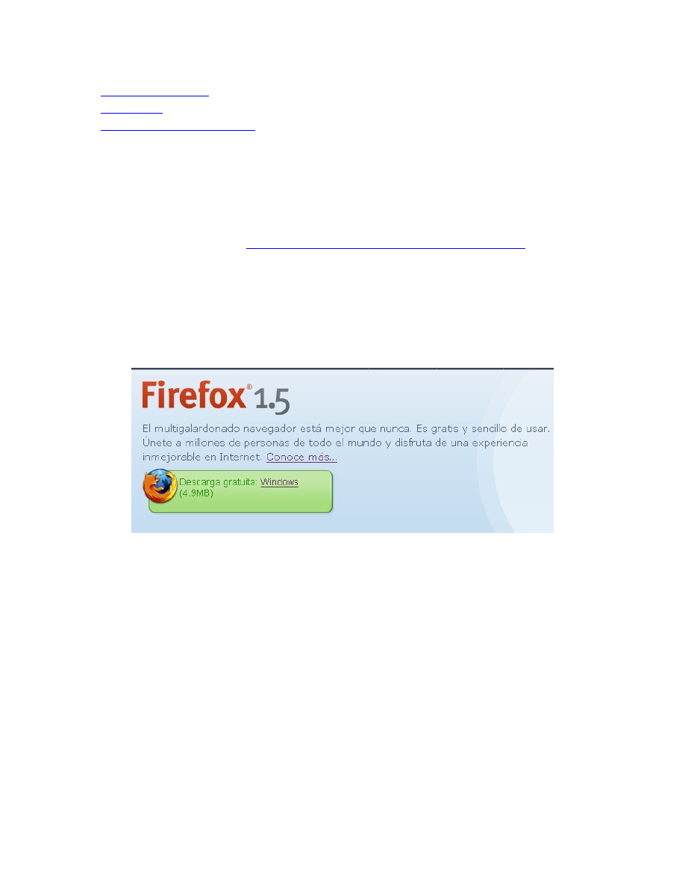
Difunde Firefox
Mozillaes
Mozillazine en español
¿Cómo lo descargo a mi computadora?
Para instalar Mozilla Firefox en un ordenador con sistema operativo
Windows (hay versiones también para los sistemas operativos Mac OS,
Unix, Linux, etc), hay que abrir el navegador, que se venía utilizando
hasta ahora, escribir http://www.mozilla.org/products/firefox y pulsar
la tecla ‘enter’, en la barra de direcciones, para acceder a la página
desde la cual se puede descargar el programa.
En la página que hemos abierto figura un apartado que dice
‘Descarga gratuita Windows’. Damos click y se nos abrirá una ventana
preguntando si queremos guardar el archivo en nuestro disco duro.
Fig. 1 Descargando Firefox
Luego aparece una nueva ventana en donde podemos escoger que
ubicación tendrá este archivo. Lo mejor es ponerlo en el escritorio
pues es más fácil de encontrar a la hora de instalarlo.
Instalación
Una vez que el archivo se ha bajado a nuestro ordenador, le damos
doble click para ejecutar el asistente de instalación. Tras la aparición
de una pequeña ventana que dice ‘Extracting…’, a la que no
Unidad de Informática
4
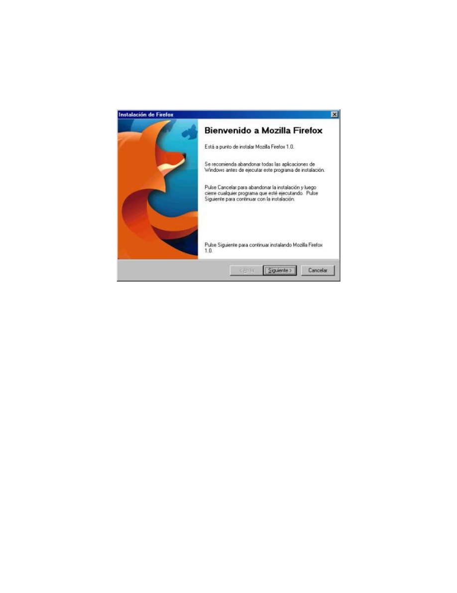
debemos hacer caso, se abre otra con la bienvenida al proceso de
instalación.
De la figura 2 a la figura 7 se muestra el proceso de instalación.
Fig. 2
En ella pulsamos en el botón ‘siguiente’ para continuar.
La pantalla que va después, es para declarar que se está de acuerdo
con los términos de la licencia.
Unidad de Informática
5
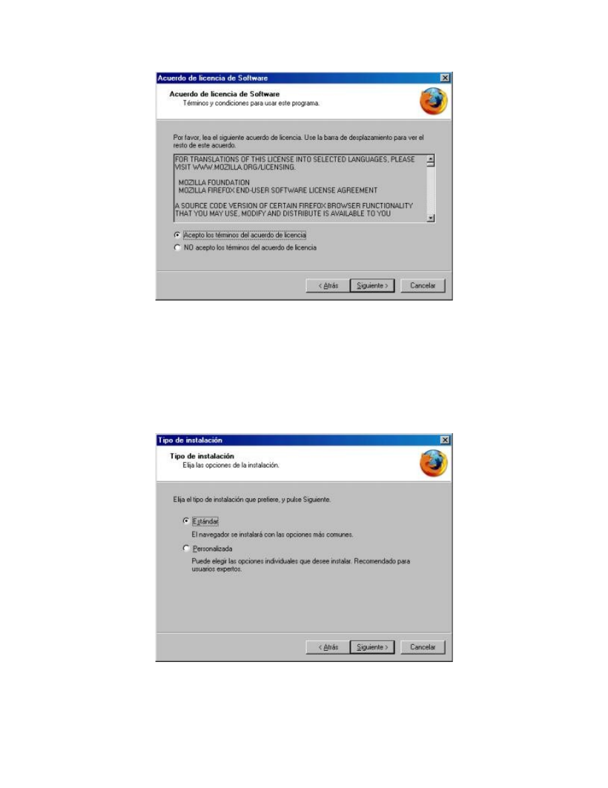
Fig. 3
Activamos la opción ‘Acepto los términos del acuerdo de licencia’,
pinchando en el circulo que aparece a la izquierda de la frase y
pulsamos el botón ‘siguiente’.
En la siguiente ventana, elegimos el tipo de instalación ‘estándar’
pinchando el círculo correspondiente y pulsando el botón siguiente.
Fig. 4
Unidad de Informática
6
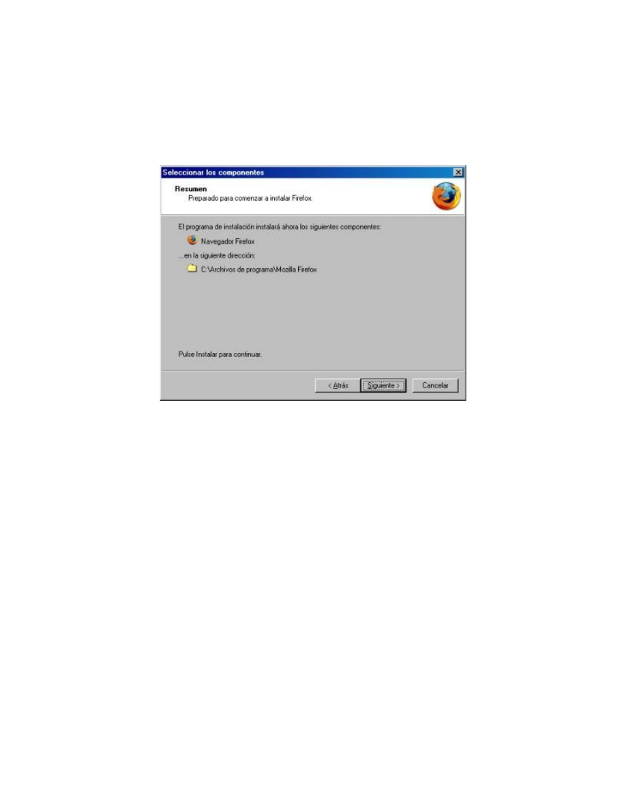
Ya está preparada la instalación. Ahora hay que volver a pulsar el
botón ‘siguiente’.
Entones, el asistente nos muestra una pantalla con los componentes
que se van a instalar. Para continuar, se pulsa el botón siguiente.
Fig. 5
A continuación comienza la instalación. El asistente va informando
de los pasos que va realizando.
Unidad de Informática
7
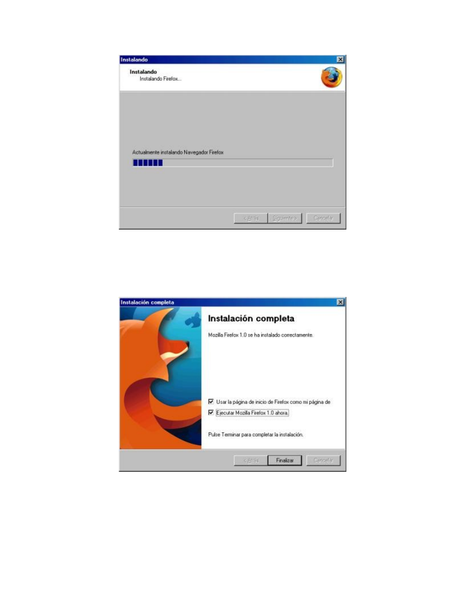
Fig. 6
Hay que esperar a que aparezca la ventana con el mensaje
‘Instalación completa’ que indica que el proceso de instalación ha
terminado.
Fig. 7
Unidad de Informática
8
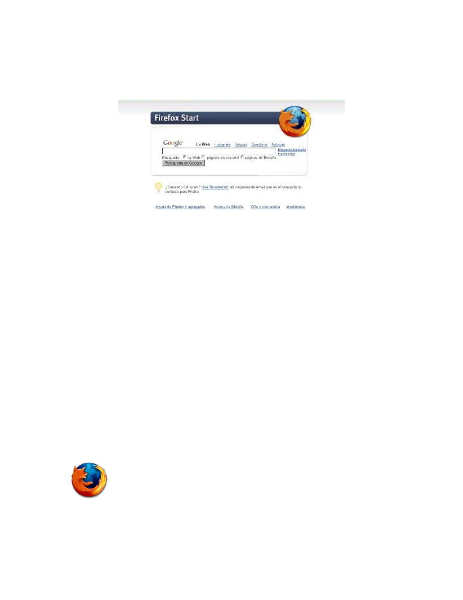
Si se tiene activada la cajita, existente a la izquierda de la frase
‘Ejecutar Mozilla Firefox 1.0. ahora’, cuando se pulsa el botón
‘finalizar’ se abre Mozilla Firefox para empezar a navegar.
Fig. 8 Iniciando firefox
En caso contrario (se puede desactivar pinchando en el interior de la
cajita), iremos al escritorio de Windows y haremos ‘doble click’ sobre
el nuevo icono de Mozilla Firefox (esa especie de zorrito que abraza
al globo terráqueo).
La cajita superior, a la izquierda de la frase “Usar la página de inicio de
Firefox como mi página de”, es para activar la opción de que, cada
vez que se abra el navegador, aparezca la página principal de Firefox.
Naturalmente, ésa página de inicio se podrá cambiar posteriormente
y en cualquier momento.
Comenzar a utilizar Mozilla Firefox
Para comenzar a utilizar Mozilla Firefox haga clic en el icono ubicado
en escritorio (Figura 1) o seleccione desde el Menú principal la opción
“Internet” y luego “Mozilla Firefox Browser”
...
Fig. 9: Icono de Mozilla Firefox en el escritorio
Unidad de Informática
9
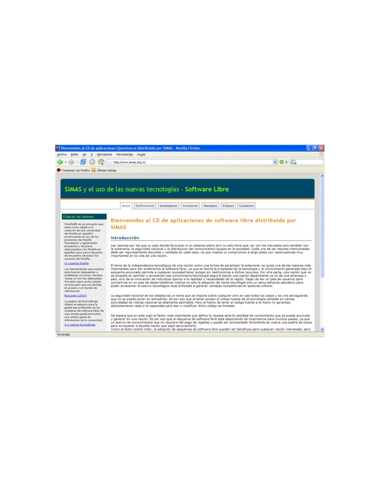
Pantalla Principal de Mozilla Firefox
Una vez iniciado el programa se desplegará una ventana como la que
muestra la figura 10, en la cual se pueden identificar las partes más
importantes: barra de navegación, marcadores, pestañas de
navegación.
Fig. 10: Ventana principal del navegador Mozilla Firefox.
Elementos para Navegar
Botones de la Barra de Navegación
Con esta barra es mucho más sencillo navegar por Internet ya que los
botones que la componen permiten realizar con mayor rapidez y
facilidad las operaciones principales.
Unidad de Informática
10
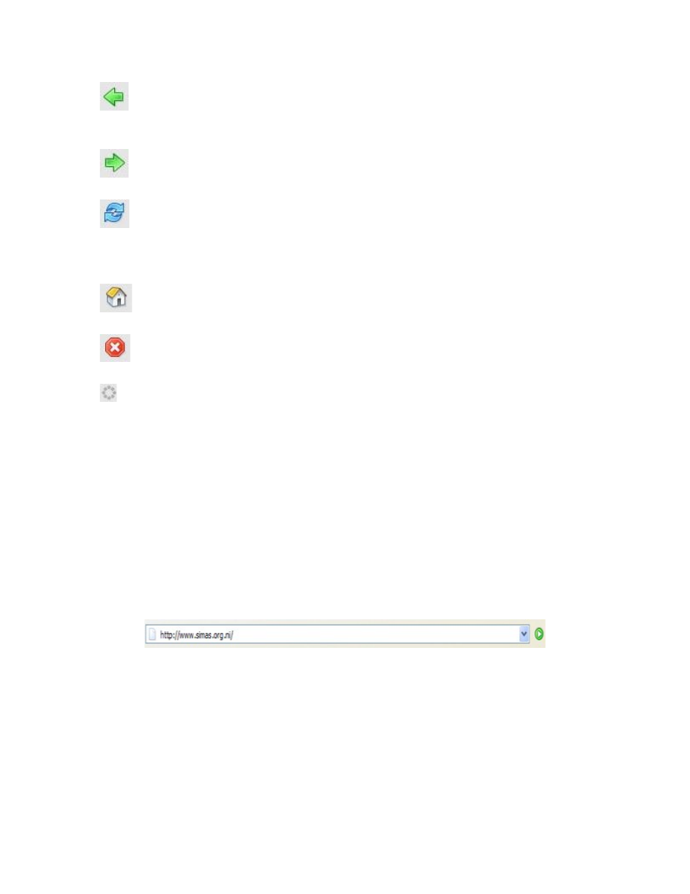
Pulsando este botón se vuelve a la página inmediatamente
anterior. Si se sigue pulsando este botón se puede volver a
cada una de las páginas visitadas.
Cuando se ha pulsado el botón anterior y se quiere volver a la
página siguiente, basta con pulsar este botón.
Vuelve a cargar la página que en esos momentos se está
viendo. Esto es útil cuando la conexión se corta y la página no
se carga bien, o cuando se quiere asegurar que la página está
actualizada.
Este botón lleva directamente a la página que esté definida
como Página Principal.
Pulsando sobre este botón se podrá interrumpir una conexión
que no responde o que ya no se desea.
Este icono indica si se está realizando una conexión a alguna
página. Si esto está ocurriendo, el icono está en movimiento,
de lo contrario, el icono permanece estático.
Barra de Dirección URL
Como muestra la Figura 11, esta es la barra donde se escriben las
direcciones URL. Escribiendo la dirección en esta barra, el navegador
traerá inmediatamente la página deseada. Pulsando la flecha que hay
a la derecha del campo, se desplegarán todas las direcciones que se
hayan escrito últimamente en la barra. Si quiere volver a alguna de
ellas sólo tiene que hacer un doble click.
Fig 11: Barra de dirección URL
Barra personal
Unidad de Informática
11
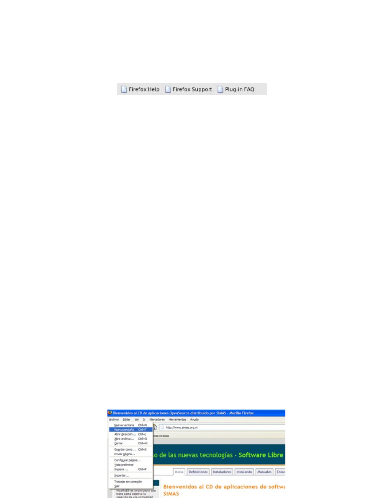
Esta barra la crea el usuario desde el editor de marcadores. De este
modo tiene las direcciones que usa habitualmente a la vista dentro
de esta barra (ver Figura 12).
Figura 12: Barra personal
La forma más rápida de crear botones en la barra personal es
arrastrar y soltar iconos. Los elementos que se añadan a la barra
personal se almacenarán como marcadores en una carpeta dentro de
la ventana marcadores. Esta carpeta se puede modificar en la
ventana de marcadores.
Para abrir la ventana marcadores se selecciona el menú Marcadores y
se pulsa Modificar Marcadores. Para organizar los marcadores que se
van a usar en la barra personal se selecciona el menú Marcadores y
luego Administrar Marcadores, dentro de esta ventana se encuentra
la carpeta bookmarks Toolbar Folder, que contiene los marcadores
que se verán en la barra personal. Esta carpeta puede contener
también otras subcarpetas.
Los botones de la barra personal se pueden modificar, añadir, borrar
o cambiar el orden, del mismo modo que se añaden, borran o
reordenan los marcadores. Los botones de la barra personal
aparecen cuando se almacenan marcadores en la carpeta del mismo
nombre.
Pestañas de Navegación
Mozilla Firefox posee ciertas características que lo hacen muy
práctico a la hora de navegar en varios sitios Web a la vez. Las
llamadas “Pestañas” permiten ver distintas páginas en una sola
ventana de Mozilla Firefox, pudiendo navegar de manera
independiente en cada una de ellas. Para abrir una nueva pestaña
dentro del navegador, haga clic en el menú Archivo – Nueva Pestaña
(Fig. 5), o bien, presione Ctrl + T (las teclas ctrl y la letra T).
Unidad de Informática
12
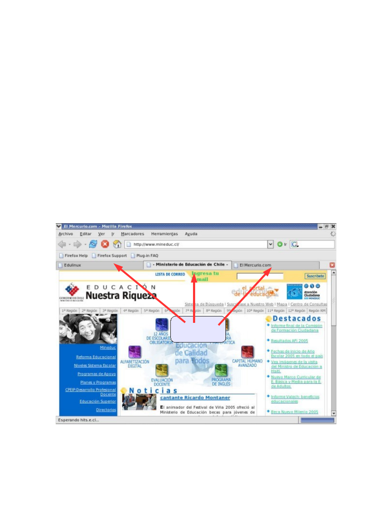
Fig. 13: Acceder a las pestañas de navegación
Como muestra la Figura 14, en la nueva pestaña podrá escribir una
nueva dirección URL. Debe repetir estos mismos pasos para abrir otra
pestaña. Cada pestaña abierta muestra, bajo la barra personal del
navegador, el nombre del sitio Web que fue abierto en ella, y
además un botón Cerrar, en el extremo derecho de la barra de
pestañas (botón rojo con una "x"), con el cual se cierra la pestaña
activa.
Fig. 14: Pestañas de navegación
Unidad de Informática
13
Pestañas
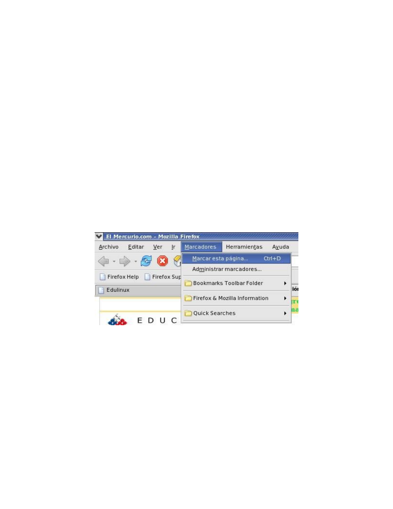
Uso de Marcadores
Cada usuario puede construir un índice de referencias con las
direcciones (URL) que más visita (sus favoritos). Es como una agenda
de páginas web. Si se quiere encontrar o acceder rápidamente a una
página web se guarda su dirección electrónica de modo que se
pueda volver a ella con sólo pulsar un botón.
Los marcadores se almacenan en una lista que se guarda en el disco
duro. Cada vez que se añade uno a la lista, permanece en ella hasta
que se borra o se modifica la lista. Su disponibilidad constante hace
que los marcadores sean muy valiosos para personalizar el acceso a
Internet.
Para añadir un marcador se selecciona el menú Marcadores y luego
Marcar esta página, como se muestra en la figura 15.
Fig. 15: Marcar una página web.
Luego se selecciona, desde la ventana que muestra la figura 16, la
carpeta donde desea guardar el marcador de la página.
Unidad de Informática
14
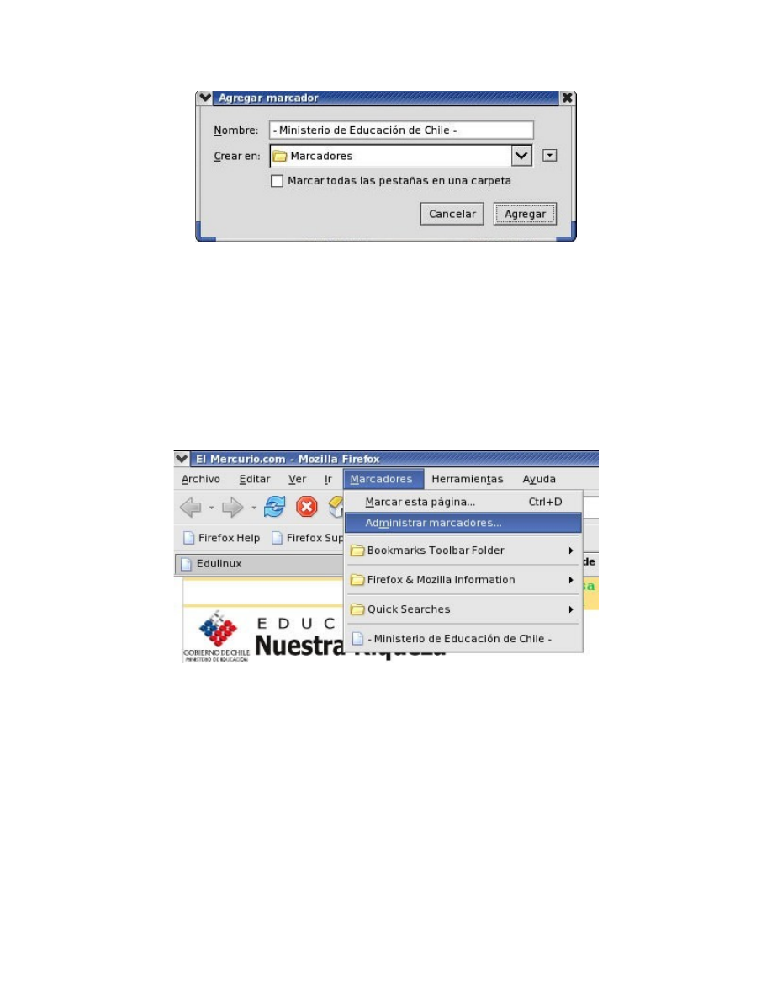
Fig. 16: Seleccionar carpeta para almacenar marcador.
Situándose sobre uno de los marcadores el navegador accederá a esa
dirección inmediatamente.
Para organizar los marcadores, abra la ventana de administración
desde el menú Marcadores - Administrar marcadores (ver figura 17).
Fig.17: Acceder al administrador de marcadores.
Desde el Administrador de marcadores (Figura 18) usted podrá crear
nuevas carpetas y subcarpetas, para agrupar las páginas de acuerdo a
su necesidad y mantenerlas organizadas. También podrá renombrar
los marcadores, reordenarlos, agregar nuevos o eliminarlos.
Unidad de Informática
15
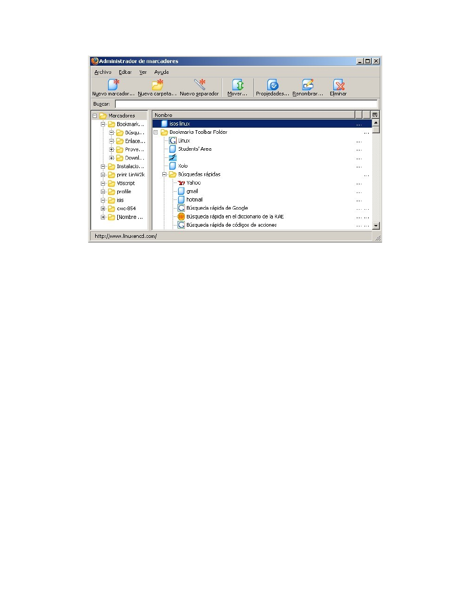
Fig. 18: Ventana de administración de marcadores.
Guardar y Extraer Información
Las páginas Web se pueden guardar como un archivo en el directorio
de trabajo del usuario. Para guardar un documento se selecciona
Archivo y luego Guardar página como. Se abrirá la ventana típica para
guardar un archivo.
Para abrir un archivo se selecciona Archivo y luego Abrir archivo.
Aparecerá el cuadro de diálogo de apertura de un archivo. Se busca
el archivo y se selecciona. Entonces se pulsa el botón Abrir.
Historial
El Historial es una forma de ver páginas visitadas anteriormente. A
diferencia de la lista de marcadores, que almacena direcciones
definidas, en el historial se guardan copias de las páginas a medida
que se visitan. Como muestra la Figura 19, para acceder a él,
seleccione el menú Ir y luego Historial (o presione la combinación de
teclas Ctrl + H).
Unidad de Informática
16
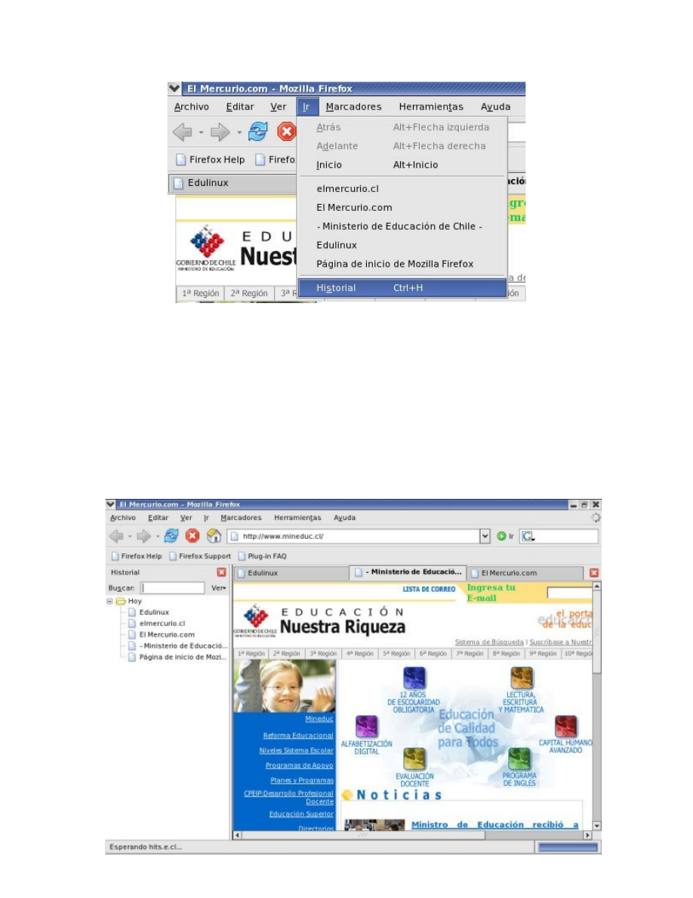
Fig. 19: Acceder al historial
Al desplegarse el menú Ir aparecerán los títulos de las últimas
direcciones visitadas. Cualquiera de ellas puede ser seleccionada con
el ratón para volver a esa página. Otra forma de volver a las páginas
visitadas es desplegar la barra de dirección URL.
La ventana de historial (ver Figura 20) ofrece títulos de página vistos
en una o más sesiones. En esta se ven los títulos de la página, la
dirección y la fecha de visita.
Unidad de Informática
17
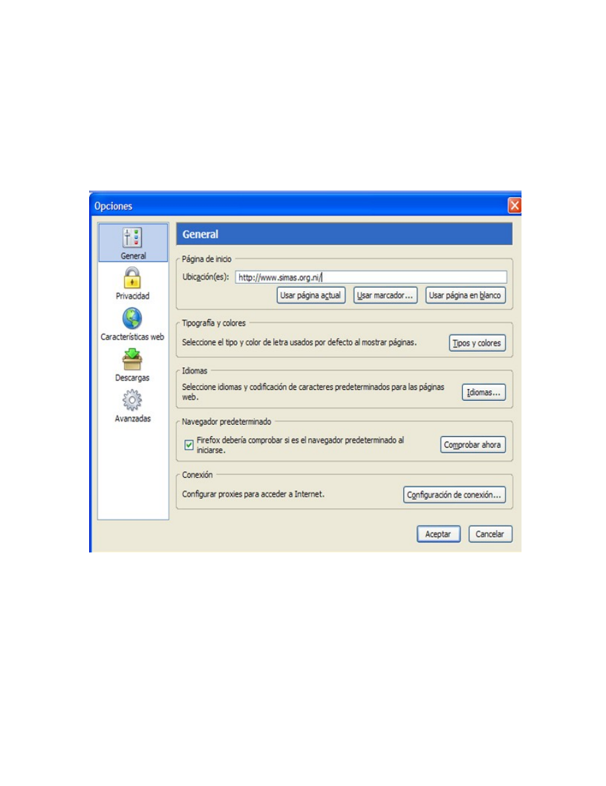
Fig. 20: Ventana de historial
Establecer Preferencias
Para configurar las preferencias del navegador se selecciona el menú
Editar y luego Preferencias, con lo cual se abrirá la ventana que se
muestra en la Figura 21.
Fig. 21: Ventana de preferencias del navegador
Desde esta ventana se pueden establecer las preferencias del
navegador, como por ejemplo su Página Principal o de inicio (home),
a la cual se conectará Mozilla Firefox cada vez que se inicie el
programa. Esta página se puede cambiar desde la sección General de
Unidad de Informática
18
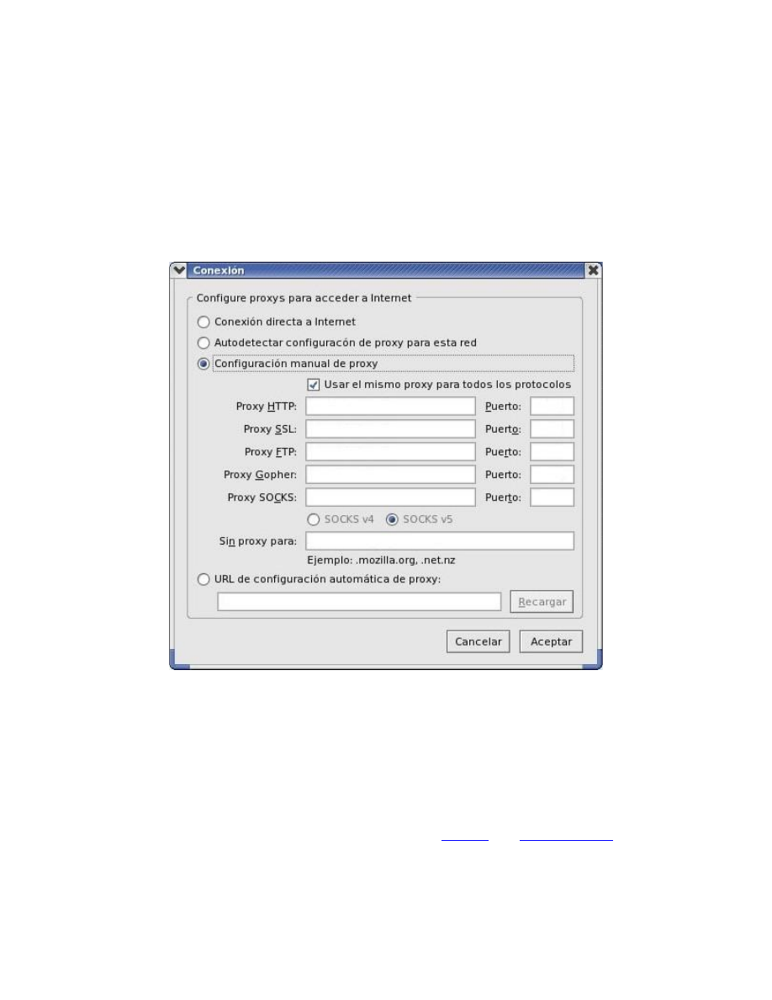
las Preferencias, en el espacio "página de inicio", donde debe
ingresarse la URL deseada.
Otra preferencia que podría necesitar modificar es el Proxy, en caso
que la conexión a Internet lo requiriera. Este se modifica desde la
misma sección General, en Conexión, al presionar el botón
Configuración de conexión, aparecerá la ventana que muestra la
figura 22, donde deben especificarse los datos del proxy de la red.
Fig. 22: Ventana de preferencias de conexión
Temas y Extenxiones para Mozilla Firefox
Mozilla Firefox puede ajustarse a su preferencia, por ello se han
desarollado diversas herramientas que le permiten modificar la
apariencia de su navegador y los utilidades que este le puede
brindar. En este CD puede descargar temas y extensiones para
mejorar su navegacin por internet.
Unidad de Informática
19
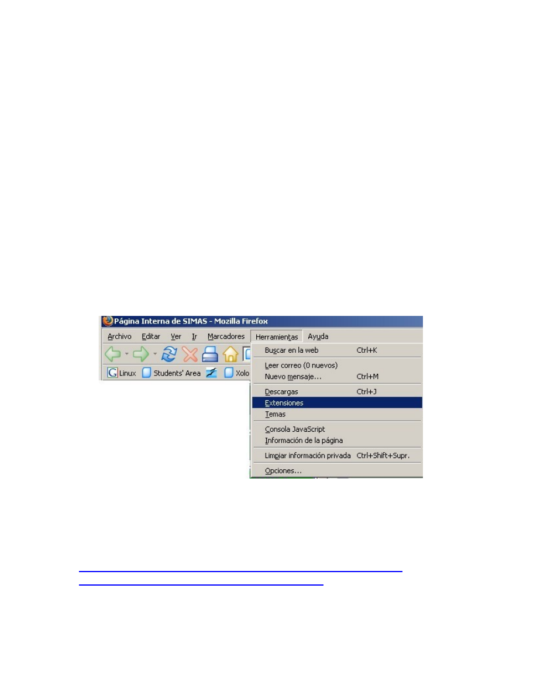
Instalar varias extensiones en Firefox con un solo click
La mayor parte de los usuarios no saben como pueden instalar varias
extensiones de una sóla vez en Firefox. La manera de hacerlo es
arrastrando el archivo de estensión xpi sobre la ventana del
navegador y así se instalará dicha extensión.
Lo mismo pasa si arrastramos todo un conjunto de extensiones sobre
la ventana del gestor de extensiones, se instalarán todas y cada una
de ellas sin más iteración necesaria por parte del usuario que pulsar
una sola vez sobre aceptar. Esto significa, que no tenemos más que
guardar los xpi de nuestras extensiones preferidas en el disco duro,
en lugar de instalarlas desde la web, y bastará arrastrarlas sobre el
gestor de extensiones para instalarlas todas al mismo tiempo.
Fig. 23 Acceder a la ventana del gestor de extensiones
Links de interés donde puede descargar extensiones:
http://www.online.com.es/530/internet/extensiones-firefox/
http://www.mozdev.org/projects/active.html
Unidad de Informática
20

Unidad de Informática
21